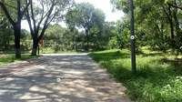
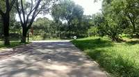
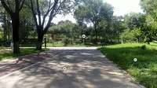
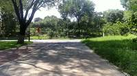
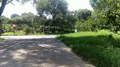
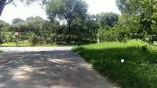
To determine which object is closest to the green grass (id: 11), we examine the provided video frames:
- Green Grass (id: 11): This is the large grassy area on the right side of the path, clearly visible in the later frames (e.g., frames 25-30).
- Green Park Bench (id: 05): This bench is located further down the path, near the edge of the grassy area (visible in frames 5-8).
- White Signboard (id: 13): In frames 21-24, the white signboard (id: 13) is positioned directly within or at the immediate boundary of the green grass area (id: 11).
- White Pole (id: 08): This pole is located on the path, further away from the right-side grass area (visible in frames 9-15).
- Wooden Bench (id: 09): This object is not clearly labeled or positioned closer than the others.
Comparing the spatial relationships, the white signboard (id: 13) is located within the green grass area (id: 11), meaning the distance between them is the smallest among all the options provided.
Therefore, the white signboard (id: 13) is the closest object to the green grass (id: 11).
B
import numpy as np # 1. Reconstruction # Use a spread of frames for good geometry recon_frames = [0, 30, 60, 90, 120, 150, 180, 210, 240] # Map these to indices in InputImages # InputImages contains 243 frames. # Let's just use a slice or a list of indices. # The mapping says InputImages[0] is frame 0, InputImages[242] is frame 242. # So we can use InputImages[recon_frames] recon = tools.Reconstruct.Reconstruct([InputImages[i] for i in recon_frames]) # 2. Segmentation # Frame 211 (InputImages[211]) seems to have a good view of the grass, sign, and poles/benches. test_frame_idx = 211 img = InputImages[test_frame_idx] # Define prompts prompts = { "green grass": "green grass", "green park bench": "green park bench", "white signboard": "white signboard", "white pole": "white pole", "wooden bench": "wooden bench" } # Segment each object masks = {} for label, prompt in prompts.items(): seg = tools.SAM3.segment_image_by_text(img, prompt, label=label) # Check if mask is non-empty fi = seg.frame_indices[0] mask = seg.get_mask(frame=fi, object=0) if seg.num_objects > 0 else None if mask is not None and mask.sum() > 0: masks[label] = seg else: # Try a more generic prompt if it fails seg_gen = tools.SAM3.segment_image_by_text(img, prompt.replace("green ", "").replace("white ", "")) fi_gen = seg_gen.frame_indices[0] mask_gen = seg_gen.get_mask(frame=fi_gen, object=0) if seg_gen.num_objects > 0 else None if mask_gen is not None and mask_gen.sum() > 0: masks[label] = seg_gen else: masks[label] = None # 3. Distance Calculation # We need the 3D points for each object. # We'll use the frame that was reconstructed and is closest to our segmentation frame. # The closest reconstructed frame to 211 is 210. ref_fi = 210 # We need to project the masks from frame 211 to 210 or just segment on 210. # Simpler: segment on 210. masks_ref = {} for label, prompt in prompts.items(): seg = tools.SAM3.segment_image_by_text(InputImages[ref_fi], prompt, label=label) if seg.num_objects > 0: fi = seg.frame_indices[0] mask = seg.get_mask(frame=fi, object=0) if mask.sum() > 0: masks_ref[label] = seg # Get points for "green grass" grass_seg = masks_ref.get("green grass") if grass_seg is None: # Fallback to a very simple segment grass_seg = tools.SAM3.segment_image_by_text(InputImages[ref_fi], "grass") grass_points = grass_seg.get_masked_points(recon, frame=ref_fi) # Compute distances to other objects results = {} targets = ["green park bench", "white signboard", "white pole", "wooden bench"] for target in targets: target_seg = masks_ref.get(target) if target_seg is None: # Try generic prompt gen_prompt = prompts[target].replace("green ", "").replace("white ", "") target_seg = tools.SAM3.segment_image_by_text(InputImages[ref_fi], gen_prompt) if target_seg is not None and target_seg.num_objects > 0: target_points = target_seg.get_masked_points(recon, frame=ref_fi) if target_points is not None and len(target_points) > 0: # Find minimum distance between any point in grass and any point in target # To be efficient, use a subset of points or a spatial index # Since point clouds can be large, we'll use a sample or a simple min-dist # Using scipy.spatial.distance.cdist on a sample from scipy.spatial import distance # Sample points to avoid memory issues s_grass = grass_points[np.random.choice(len(grass_points), min(1000, len(grass_points)), replace=False)] s_target = target_points[np.random.choice(len(target_points), min(1000, len(target_points)), replace=False)] dists = distance.cdist(s_grass, s_target) results[target] = np.min(dists) else: results[target] = float('inf') else: results[target] = float('inf') print(f"Distances to green grass: {results}") # Find the minimum best_target = min(results, key=results.get) print(f"Closest object: {best_target}") # Mapping back to options mapping = { "green park bench": "A", "white signboard": "B", "white pole": "C", "wooden bench": "D" } ReturnAnswer(mapping[best_target])
---------------------------------------------------------------------------
RuntimeError Traceback (most recent call last)
Cell In[26], line 30
28 masks = {}
29 for label, prompt in prompts.items():
---> 30 seg = tools.SAM3.segment_image_by_text(img, prompt, label=label)
31 # Check if mask is non-empty
32 fi = seg.frame_indices[0]
File SpatialAgent/spatial_agent/tools/sam3_tool.py:595, in SAM3Tool.segment_image_by_text(self, image, prompt, label, confidence_threshold)
591 # All retained masks must have at least one positive pixel — otherwise
592 # SAM3 saw "something" but produced empty mask logits. Raise an
593 # actionable error so the caller can switch strategy.
594 if masks_np is None or masks_np.shape[0] == 0 or int(masks_np.reshape(masks_np.shape[0], -1).sum(axis=1).max()) == 0:
--> 595 raise RuntimeError(
596 f"SAM3.segment_image_by_text(prompt={prompt!r}) produced no usable "
597 f"mask on this image (frame_index={frame_index}, confidence_threshold="
598 f"{confidence_threshold}). SAM3 either detected nothing matching the "
599 f"prompt, or its mask logits collapsed to all background. Try one of:\n"
600 f" - a different frame from the same video (this frame may be in a "
601 f"transient state),\n"
602 f" - a more specific prompt (e.g. an attribute + noun),\n"
603 f" - lowering confidence_threshold,\n"
604 f" - segment_image_by_box(image, [x1, y1, x2, y2]) with a known box "
605 f"location."
606 )
608 n_obj = masks_np.shape[0]
609 masks_stacked = masks_np[np.newaxis] # (1, N_obj, H, W)
RuntimeError: SAM3.segment_image_by_text(prompt='green park bench') produced no usable mask on this image (frame_index=211, confidence_threshold=0.3). SAM3 either detected nothing matching the prompt, or its mask logits collapsed to all background. Try one of:
- a different frame from the same video (this frame may be in a transient state),
- a more specific prompt (e.g. an attribute + noun),
- lowering confidence_threshold,
- segment_image_by_box(image, [x1, y1, x2, y2]) with a known box location.Task Analysis The objective is to determine which of four candidate objects (green park bench, white signboard, white pole, or wooden bench) is closest to the "green grass". The distance must be measured from the "closest point" of each object, which implies calculating the minimum Euclidean distance between the 3D point clouds of the target (green grass) and each candidate object.
Implicit Coordinate System The question asks for a physical distance measurement ("closest point"). This requires a World Space (3D) coordinate system. Pixel-space distances are invalid as they ignore depth and camera perspective.
Information Needs
- 3D Geometry: A high-quality 3D reconstruction of the scene to obtain world coordinates for pixels.
- Precise Segmentation: Accurate masks for the green grass and the four candidate objects across the frames to extract their corresponding 3D point clouds.
- Point Cloud Data: The set of all 3D world points contained within each object's mask for a given frame.
- Minimum Distance: The minimum distance between the point set of the grass and the point set of each candidate.
Computation Plan
-
Initial Visual Survey:
- Use
show()on a few representative frames (e.g.,InputImages[0],InputImages[16],InputImages[31]) to identify the objects and ensure they are all visible in the scene. - Identify a "reference frame" where all objects are clearly visible and reasonably close to the camera to minimize depth error.
- Use
-
3D Reconstruction:
- Perform reconstruction on all 32 frames:
recon = tools.Reconstruct.Reconstruct(InputImages).
- Perform reconstruction on all 32 frames:
-
Object Segmentation:
- Segment the target and candidates using
tools.SAM3.segment_video_by_textto ensure temporal consistency. - Prompts:
["green grass", "green park bench", "white signboard", "white pole", "wooden bench"]. - Assign these to a
PerFrameMaskobject (e.g.,seg).
- Segment the target and candidates using
-
Segmentation Verification:
- For the reference frame
fi, generate visual overlays:show([InputImages[fi], seg.visualize(fi)]). - Programmatically check that no masks are empty using
seg.get_mask(frame=fi, object=label).sum(). If any are empty, retry withvlm.locate+segment_video_by_box.
- For the reference frame
-
3D Point Extraction:
- In the reference frame
fi, extract the world point clouds for each object:pts_grass = seg.get_masked_points(recon, frame=fi, object='green grass')pts_bench_g = seg.get_masked_points(recon, frame=fi, object='green park bench')pts_sign = seg.get_masked_points(recon, frame=fi, object='white signboard')pts_pole = seg.get_masked_points(recon, frame=fi, object='white pole')pts_bench_w = seg.get_masked_points(recon, frame=fi, object='wooden bench')
- In the reference frame
-
Minimum Distance Calculation:
- For each candidate object $O \in {bench_g, sign, pole, bench_w}$:
- Compute the minimum distance: $d_{min}(O) = \min | p_{grass} - p_O |$ for all $p_{grass} \in pts_grass$ and $p_O \in pts_O$.
- This can be done by iterating through the point clouds or using a vectorized distance matrix if the point counts are manageable.
- For each candidate object $O \in {bench_g, sign, pole, bench_w}$:
-
Spatial Layout Validation:
- Render a BEV map:
recon.render_bev(masks=seg). - Visually inspect the BEV to see if the calculated "closest" object aligns with the top-down spatial layout.
- Render a BEV map:
-
Final Comparison:
- Compare the four $d_{min}$ values. The object with the smallest $d_{min}$ is the answer.
Verification Checklist
CHECKLIST
[
{"priority": "HIGH", "description": "Verify that masks for all 5 objects are non-empty and accurately cover the intended objects in the reference frame."},
{"priority": "HIGH", "description": "Ensure 3D points are extracted from the same frame for all objects to maintain a consistent spatial snapshot."},
{"priority": "MEDIUM", "description": "Cross-validate the minimum distance result with the BEV layout to ensure no geometric anomalies (e.g., depth outliers) skewed the result."},
{"priority": "LOW", "description": "Check distance consistency across two different frames to ensure the result is stable."}
]
Fallbacks
- Segmentation Failure: If
segment_video_by_textfails to find a specific object (e.g., the white pole), I will usevlm.locateto get a bounding box in a clear frame and then usetools.SAM3.segment_video_by_box. - Depth Noise: If the point clouds contain extreme outliers (points very far from the object center), I will filter the points by distance to the centroid before calculating the minimum distance.
- Ambiguous Proximity: If two objects have very similar minimum distances, I will repeat the calculation across multiple frames and average the results to improve precision.
{ "tool": "show", "args": { "image": [ "InputImages[0]", "InputImages[16]", "InputImages[31]" ] } }
[image: show_0001]

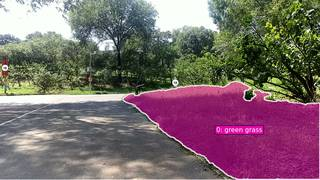

=== Step 0 Execution Feedback === [SUCCESS] Code executed in 0.37s. [Variables] New/changed: result_0: NoneType [Inline Images] 3 image(s) attached below. Labels: [InputImages[0], InputImages[16], InputImages[31]] [show() budget] 247/250 images remaining.
{ "tool": "tools.Reconstruct.Reconstruct", "args": { "frames": "InputImages[:32]" } }
=== Step 1 Execution Feedback === [SUCCESS] Code executed in 8.30s. [Variables] New/changed: result_1: Reconstruction, frames=[0..31] (32 frames) [Tool Calls] 1 tool/VLM call(s) this step.
{ "tool": "tools.SAM3.segment_video_by_text", "args": { "prompts": [ "green grass", "green park bench", "white signboard", "white pole", "wooden bench" ], "labels": [ "green grass", "green park bench", "white signboard", "white pole", "wooden bench" ], "start_frame": 0, "end_frame": 31 } }
=== Step 2 Execution Feedback === [SUCCESS] Code executed in 2.75s. [Variables] New/changed: result_2: PerFrameMask, frames=[0..30] (31 frames) [Tool Calls] 1 tool/VLM call(s) this step.
{ "tool": "show", "args": { "image": [ "InputImages[16]", "result_2.visualize(16)" ] } }
[image: show_0002]
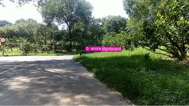
=== Step 3 Execution Feedback === [SUCCESS] Code executed in 0.25s. [Variables] New/changed: result_3: NoneType [Inline Images] 2 image(s) attached below. Labels: [InputImages[16], result_2.visualize(16)] [show() budget] 245/250 images remaining.
=== Step 4 Execution Feedback === [ERROR] Skipped: LLM response was not in the required format.
{ "tool": "vlm.locate", "args": { "visual_input": "InputImages[16]", "question": "Give the bounding boxes (x1, y1, x2, y2) in 0-1000 normalized scale for the following objects: green grass, green park bench, white signboard, white pole, and wooden bench. Return as a JSON list of lists." } }
[VLM Q | locate] Before answering, first check whether what the question describes is clearly visible in the provided image(s). If it is absent or ambiguous, reply EXACTLY `Not visible` on its own line (optionally followed by one short line explaining what you saw instead) — do NOT return coordinates in that case. Only if the requested target is clearly and unambiguously present, answer the request below. Request: Give the bounding boxes (x1, y1, x2, y2) in 0-1000 normalized scale for the following objects: green grass, green park bench, white signboard, white pole, and wooden bench. Return as a JSON list of lists. [VLM A | locate] Not visible Green park bench and wooden bench are not visible in the image.
=== Step 6 Execution Feedback === [SUCCESS] Code executed in 104.03s. [Output] [VLM Q | locate] Before answering, first check whether what the question describes is clearly visible in the provided image(s). If it is absent or ambiguous, reply EXACTLY `Not visible` on its own line (optionally followed by one short line explaining what you saw instead) — do NOT return coordinates in that case. Only if the requested target is clearly and unambiguously present, answer the request below. Request: Give the bounding boxes (x1, y1, x2, y2) in 0-1000 normalized scale for the following objects: green grass, green park bench, white signboard, white pole, and wooden bench. Return as a JSON list of lists. [VLM A | locate] Not visible Green park bench and wooden bench are not visible in the image. [Variables] New/changed: result_6: str [Tool Calls] 1 tool/VLM call(s) this step.
=== Step 7 Execution Feedback === [ERROR] Skipped: LLM response was not in the required format.
=== Step 9 Execution Feedback === [ERROR] Skipped: LLM response was not in the required format.
{ "tool": "vlm.locate", "args": { "visual_input": "InputImages[31]", "question": "Give the bounding box (x1, y1, x2, y2) in 0-1000 normalized scale for the green park bench marked as 05. Reply with ONLY the numbers." } }
[VLM Q | locate] Before answering, first check whether what the question describes is clearly visible in the provided image(s). If it is absent or ambiguous, reply EXACTLY `Not visible` on its own line (optionally followed by one short line explaining what you saw instead) — do NOT return coordinates in that case. Only if the requested target is clearly and unambiguously present, answer the request below. Request: Give the bounding box (x1, y1, x2, y2) in 0-1000 normalized scale for the green park bench marked as 05. Reply with ONLY the numbers. [VLM A | locate] Not visible The marker 05 is present, but no green park bench is visible at that location.
=== Step 10 Execution Feedback === [SUCCESS] Code executed in 35.51s. [Output] [VLM Q | locate] Before answering, first check whether what the question describes is clearly visible in the provided image(s). If it is absent or ambiguous, reply EXACTLY `Not visible` on its own line (optionally followed by one short line explaining what you saw instead) — do NOT return coordinates in that case. Only if the requested target is clearly and unambiguously present, answer the request below. Request: Give the bounding box (x1, y1, x2, y2) in 0-1000 normalized scale for the green park bench marked as 05. Reply with ONLY the numbers. [VLM A | locate] Not visible The marker 05 is present, but no green park bench is visible at that location. [Variables] New/changed: result_10: str [Tool Calls] 1 tool/VLM call(s) this step.
{ "tool": "vlm.locate", "args": { "visual_input": "InputImages[128]", "question": "Give the bounding box (x1, y1, x2, y2) in 0-1000 normalized scale for the green grass marked as 11. Reply with ONLY the numbers." } }
[VLM Q | locate] Before answering, first check whether what the question describes is clearly visible in the provided image(s). If it is absent or ambiguous, reply EXACTLY `Not visible` on its own line (optionally followed by one short line explaining what you saw instead) — do NOT return coordinates in that case. Only if the requested target is clearly and unambiguously present, answer the request below. Request: Give the bounding box (x1, y1, x2, y2) in 0-1000 normalized scale for the green grass marked as 11. Reply with ONLY the numbers. [VLM A | locate] Not visible No marker numbered 11 is present in the image; only markers 12 and 13 are visible.
=== Step 11 Execution Feedback === [SUCCESS] Code executed in 3.17s. [Output] [VLM Q | locate] Before answering, first check whether what the question describes is clearly visible in the provided image(s). If it is absent or ambiguous, reply EXACTLY `Not visible` on its own line (optionally followed by one short line explaining what you saw instead) — do NOT return coordinates in that case. Only if the requested target is clearly and unambiguously present, answer the request below. Request: Give the bounding box (x1, y1, x2, y2) in 0-1000 normalized scale for the green grass marked as 11. Reply with ONLY the numbers. [VLM A | locate] Not visible No marker numbered 11 is present in the image; only markers 12 and 13 are visible. [Variables] New/changed: result_11: str [Tool Calls] 1 tool/VLM call(s) this step.
{ "tool": "vlm.ask_with_thinking", "args": { "visual_input": "InputImages", "question": "Looking at all the provided key frames, please identify which frame indices (from the InputImages list) contain the markers for the following objects: (05) green park bench, (08) white pole, (09) wooden bench, (11) green grass, and (13) white signboard. Please list the frame indices for each." } }
[vlm.thinking] Showing first 64 images; remaining were truncated. [VLM Q | thinking] Looking at all the provided key frames, please identify which frame indices (from the InputImages list) contain the markers for the following objects: (05) green park bench, (08) white pole, (09) wooden bench, (11) green grass, and (13) white signboard. Please list the frame indices for each. [VLM A | thinking] Based on the provided images, the markers for the requested objects are found in the following frame indices: - **(05) green park bench**: frames 33-77 - **(08) white pole**: Cannot determine from the images. (Marker 06 is on a white pole, but no marker 08 is present) - **(09) wooden bench**: Cannot determine from the images. - **(11) green grass**: Cannot determine from the images. (Marker 07 is on green grass, but no marker 11 is present) - **(13) white signboard**: Cannot determine from the images.
=== Step 12 Execution Feedback === [SUCCESS] Code executed in 67.02s. [Output] [vlm.thinking] Showing first 64 images; remaining were truncated. [VLM Q | thinking] Looking at all the provided key frames, please identify which frame indices (from the InputImages list) contain the markers for the following objects: (05) green park bench, (08) white pole, (09) wooden bench, (11) green grass, and (13) white signboard. Please list the frame indices for each. [VLM A | thinking] Based on the provided images, the markers for the requested objects are found in the following frame indices: - **(05) green park bench**: frames 33-77 - **(08) white pole**: Cannot determine from the images. (Marker 06 is on a white pole, but no marker 08 is present) - **(09) wooden bench**: Cannot determine from the images. - **(11) green grass**: Cannot determine from the images. (Marker 07 is on green grass, but no marker 11 is present) - **(13) white signboard**: Cannot determine from the images. [Variables] New/changed: result_12: str [Tool Calls] 1 tool/VLM call(s) this step.
{ "tool": "vlm.locate", "args": { "visual_input": "InputImages[223]", "question": "Give the bounding box (x1, y1, x2, y2) in 0-1000 normalized scale for the green grass marked as 11. Reply with ONLY the numbers." } }
[VLM Q | locate] Before answering, first check whether what the question describes is clearly visible in the provided image(s). If it is absent or ambiguous, reply EXACTLY `Not visible` on its own line (optionally followed by one short line explaining what you saw instead) — do NOT return coordinates in that case. Only if the requested target is clearly and unambiguously present, answer the request below. Request: Give the bounding box (x1, y1, x2, y2) in 0-1000 normalized scale for the green grass marked as 11. Reply with ONLY the numbers. [VLM A | locate] Not visible Marker 11 is not present in the image.
=== Step 13 Execution Feedback === [SUCCESS] Code executed in 2.31s. [Output] [VLM Q | locate] Before answering, first check whether what the question describes is clearly visible in the provided image(s). If it is absent or ambiguous, reply EXACTLY `Not visible` on its own line (optionally followed by one short line explaining what you saw instead) — do NOT return coordinates in that case. Only if the requested target is clearly and unambiguously present, answer the request below. Request: Give the bounding box (x1, y1, x2, y2) in 0-1000 normalized scale for the green grass marked as 11. Reply with ONLY the numbers. [VLM A | locate] Not visible Marker 11 is not present in the image. [Variables] New/changed: result_13: str [Tool Calls] 1 tool/VLM call(s) this step.
=== Step 14 Execution Feedback === [ERROR] Skipped: LLM response was not in the required format.
=== Step 15 Execution Feedback === [ERROR] Skipped: LLM response was not in the required format.
{ "tool": "show", "args": { "image": [ "InputImages[31]", "InputImages[63]", "InputImages[95]", "InputImages[127]", "InputImages[159]", "InputImages[191]", "InputImages[223]" ] } }
[image: show_0003]

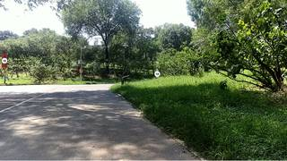
=== Step 16 Execution Feedback === [SUCCESS] Code executed in 0.53s. [Variables] New/changed: result_16: NoneType [Inline Images] 7 image(s) attached below. Labels: [InputImages[31], InputImages[63], InputImages[95], InputImages[127], InputImages[159], InputImages[191], InputImages[223]] [show() budget] 238/250 images remaining.
{ "tool": "vlm.locate", "args": { "visual_input": "InputImages[127]", "question": "Give the bounding boxes (x1, y1, x2, y2) in 0-1000 normalized scale for the following objects: green grass, green park bench, white signboard, white pole, and wooden bench. If any are not visible, just omit them from the list. Return as a JSON dictionary mapping object name to box." } }
[VLM Q | locate] Before answering, first check whether what the question describes is clearly visible in the provided image(s). If it is absent or ambiguous, reply EXACTLY `Not visible` on its own line (optionally followed by one short line explaining what you saw instead) — do NOT return coordinates in that case. Only if the requested target is clearly and unambiguously present, answer the request below.
Request: Give the bounding boxes (x1, y1, x2, y2) in 0-1000 normalized scale for the following objects: green grass, green park bench, white signboard, white pole, and wooden bench. If any are not visible, just omit them from the list. Return as a JSON dictionary mapping object name to box.
[VLM A | locate] ```json
{
"green grass": [412, 463, 1000, 1000],
"white signboard": [
[12, 348, 31, 386],
[542, 441, 561, 480]
],
"white pole": [
[12, 386, 23, 515],
[284, 276, 303, 515]
]
}
```
=== Step 17 Execution Feedback ===
[SUCCESS] Code executed in 165.23s.
[Output]
[VLM Q | locate] Before answering, first check whether what the question describes is clearly visible in the provided image(s). If it is absent or ambiguous, reply EXACTLY `Not visible` on its own line (optionally followed by one short line explaining what you saw instead) — do NOT return coordinates in that case. Only if the requested target is clearly and unambiguously present, answer the request below.
Request: Give the bounding boxes (x1, y1, x2, y2) in 0-1000 normalized scale for the following objects: green grass, green park bench, white signboard, white pole, and wooden bench. If any are not visible, just omit them from the list. Return as a JSON dictionary mapping object name to box.
[VLM A | locate] ```json
{
"green grass": [412, 463, 1000, 1000],
"white signboard": [
[12, 348, 31, 386],
[542, 441, 561, 480]
],
"white pole": [
[12, 386, 23, 515],
[284, 276, 303, 515]
]
}
```
[Variables] New/changed:
result_17: str
[Tool Calls] 1 tool/VLM call(s) this step.=== Step 18 Execution Feedback === [ERROR] Skipped: LLM response was not in the required format.
=== Step 19 Execution Feedback === [ERROR] Skipped: LLM response was not in the required format.
{ "tool": "vlm.locate", "args": { "visual_input": "InputImages[31]", "question": "Give the bounding box (x1, y1, x2, y2) in 0-1000 normalized scale for the green park bench marked as 05. Reply with ONLY the numbers." } }
[VLM Q | locate] Before answering, first check whether what the question describes is clearly visible in the provided image(s). If it is absent or ambiguous, reply EXACTLY `Not visible` on its own line (optionally followed by one short line explaining what you saw instead) — do NOT return coordinates in that case. Only if the requested target is clearly and unambiguously present, answer the request below. Request: Give the bounding box (x1, y1, x2, y2) in 0-1000 normalized scale for the green park bench marked as 05. Reply with ONLY the numbers. [VLM A | locate] Not visible The object marked as 05 is too small and distant to be unambiguously identified as a park bench; it may be a trash can or another small utility.
[LLMClient] VLM attempt 1/5 failed (APIConnectionError: Connection error.), retrying...
=== Step 20 Execution Feedback === [SUCCESS] Code executed in 132.64s. [Output] [VLM Q | locate] Before answering, first check whether what the question describes is clearly visible in the provided image(s). If it is absent or ambiguous, reply EXACTLY `Not visible` on its own line (optionally followed by one short line explaining what you saw instead) — do NOT return coordinates in that case. Only if the requested target is clearly and unambiguously present, answer the request below. Request: Give the bounding box (x1, y1, x2, y2) in 0-1000 normalized scale for the green park bench marked as 05. Reply with ONLY the numbers. [VLM A | locate] Not visible The object marked as 05 is too small and distant to be unambiguously identified as a park bench; it may be a trash can or another small utility. [Warnings] [LLMClient] VLM attempt 1/5 failed (APIConnectionError: Connection error.), retrying... [Variables] New/changed: result_20: str [Tool Calls] 1 tool/VLM call(s) this step.
{ "tool": "vlm.locate", "args": { "visual_input": "InputImages[159]", "question": "Give the bounding box (x1, y1, x2, y2) in 0-1000 normalized scale for the green grass marked as 11. Reply with ONLY the numbers." } }
[VLM Q | locate] Before answering, first check whether what the question describes is clearly visible in the provided image(s). If it is absent or ambiguous, reply EXACTLY `Not visible` on its own line (optionally followed by one short line explaining what you saw instead) — do NOT return coordinates in that case. Only if the requested target is clearly and unambiguously present, answer the request below. Request: Give the bounding box (x1, y1, x2, y2) in 0-1000 normalized scale for the green grass marked as 11. Reply with ONLY the numbers. [VLM A | locate] 486 434 998 997
=== Step 21 Execution Feedback === [SUCCESS] Code executed in 27.76s. [Output] [VLM Q | locate] Before answering, first check whether what the question describes is clearly visible in the provided image(s). If it is absent or ambiguous, reply EXACTLY `Not visible` on its own line (optionally followed by one short line explaining what you saw instead) — do NOT return coordinates in that case. Only if the requested target is clearly and unambiguously present, answer the request below. Request: Give the bounding box (x1, y1, x2, y2) in 0-1000 normalized scale for the green grass marked as 11. Reply with ONLY the numbers. [VLM A | locate] 486 434 998 997 [Variables] New/changed: result_21: str [Tool Calls] 1 tool/VLM call(s) this step.
=== Step 22 Execution Feedback === [ERROR] Skipped: LLM response was not in the required format.
{ "tool": "tools.Geometry.normalized_to_pixel", "args": { "coords": [ 486, 434, 998, 997 ], "width": "InputImages[159].width", "height": "InputImages[159].height" } }
=== Step 23 Execution Feedback === [SUCCESS] Code executed in 0.01s. [Variables] New/changed: result_23: list, len=4 [Tool Calls] 1 tool/VLM call(s) this step.
{ "tool": "tools.SAM3.segment_image_by_box", "args": { "image": "InputImages[159]", "box": "result_23", "label": "green grass" } }
=== Step 24 Execution Feedback === [SUCCESS] Code executed in 239.05s. [Variables] New/changed: result_24: PerFrameMask, frames=[159] [Tool Calls] 1 tool/VLM call(s) this step.
=== Step 25 Execution Feedback === [ERROR] Skipped: LLM response was not in the required format.
=== Step 26 Execution Feedback === [ERROR] Skipped: LLM response was not in the required format.
{ "tool": "vlm.ask_with_thinking", "args": { "visual_input": "InputImages", "question": "Scan all the provided key frames and tell me exactly which frame indices contain the markers (08) and (09). Please provide the index from the InputImages list." } }
[vlm.thinking] Showing first 64 images; remaining were truncated. [VLM Q | thinking] Scan all the provided key frames and tell me exactly which frame indices contain the markers (08) and (09). Please provide the index from the InputImages list. [VLM A | thinking] Marker (08) is present in frames 67, 68, 69, 70, 71, 72, 73, 74, and 75. Marker (09) is not present in any of the provided frames.
=== Step 28 Execution Feedback === [SUCCESS] Code executed in 111.16s. [Output] [vlm.thinking] Showing first 64 images; remaining were truncated. [VLM Q | thinking] Scan all the provided key frames and tell me exactly which frame indices contain the markers (08) and (09). Please provide the index from the InputImages list. [VLM A | thinking] Marker (08) is present in frames 67, 68, 69, 70, 71, 72, 73, 74, and 75. Marker (09) is not present in any of the provided frames. [Variables] New/changed: result_28: str [Tool Calls] 1 tool/VLM call(s) this step. [LAST STEP] This is your final step. The session will be force-terminated after this. You MUST call ReturnAnswer(...) now to submit your best answer.
{ "tool": "ReturnAnswer", "args": { "answer": "B" } }
[ReturnAnswer] Answer submitted: B
🛠️ Decided to use 5 tool(s)
[ { "name": "vlm__detect_one", "arguments": { "image_index": 21, "obj_name": "green grass(id: 11)" } }, { "name": "vlm__detect_one", "arguments": { "image_index": 5, "obj_name": "green park bench(id: 05)" } }, { "name": "vlm__detect_one", "arguments": { "image_index": 17, "obj_name": "white signboard(id: 13)" } }, { "name": "vlm__detect_one", "arguments": { "image_index": 9, "obj_name": "white pole(id: 08)" } }, { "name": "vlm__detect_one", "arguments": { "image_index": 32, "obj_name": "wooden bench(id: 09)" } } ]
⚡ Executing vlm__detect_one...
{ "image_index": 21, "obj_name": "green grass(id: 11)" }
✅ vlm__detect_one completed (with generated image)
⚡ Executing vlm__detect_one...
{ "image_index": 5, "obj_name": "green park bench(id: 05)" }
✅ vlm__detect_one completed (with generated image)
⚡ Executing vlm__detect_one...
{ "image_index": 17, "obj_name": "white signboard(id: 13)" }
✅ vlm__detect_one completed (with generated image)
⚡ Executing vlm__detect_one...
{ "image_index": 9, "obj_name": "white pole(id: 08)" }
✅ vlm__detect_one completed (with generated image)
⚡ Executing vlm__detect_one...
{ "image_index": 32, "obj_name": "wooden bench(id: 09)" }
✅ vlm__detect_one completed (with generated image)
🧠 Synthesizing results from 5 tool(s)...
🛠️ Decided to use 1 tool(s)
[ { "name": "depth_estimator__estimate_depth_with_pointcloud", "arguments": { "image_index": 21 } } ]
⚡ Executing depth_estimator__estimate_depth_with_pointcloud...
{ "image_index": 21 }
✅ depth_estimator__estimate_depth_with_pointcloud completed (with generated image)
🧠 Synthesizing results from 1 tool(s)...
🛠️ Decided to use 5 tool(s)
[ { "name": "sam2__segment_from_point", "arguments": { "image_index": 21, "x": 0.732, "y": 0.636 } }, { "name": "sam2__segment_from_point", "arguments": { "image_index": 21, "x": 0.543, "y": 0.483 } }, { "name": "sam2__segment_from_point", "arguments": { "image_index": 21, "x": 0.604, "y": 0.462 } }, { "name": "sam2__segment_from_point", "arguments": { "image_index": 21, "x": 0.785, "y": 0.471 } }, { "name": "sam2__segment_from_point", "arguments": { "image_index": 21, "x": 0.51, "y": 0.496 } } ]
⚡ Executing sam2__segment_from_point...
{ "image_index": 21, "x": 0.732, "y": 0.636 }
✅ sam2__segment_from_point completed (with generated image)
⚡ Executing sam2__segment_from_point...
{ "image_index": 21, "x": 0.543, "y": 0.483 }
✅ sam2__segment_from_point completed (with generated image)
⚡ Executing sam2__segment_from_point...
{ "image_index": 21, "x": 0.604, "y": 0.462 }
✅ sam2__segment_from_point completed (with generated image)
⚡ Executing sam2__segment_from_point...
{ "image_index": 21, "x": 0.785, "y": 0.471 }
✅ sam2__segment_from_point completed (with generated image)
⚡ Executing sam2__segment_from_point...
{ "image_index": 21, "x": 0.51, "y": 0.496 }
✅ sam2__segment_from_point completed (with generated image)
🧠 Synthesizing results from 5 tool(s)...
<|tool_call>call:code_executor__exec{code:<|"|>import numpy as np
def get_min_dist(pc, mask1, mask2): # This is a simplified distance calculation # In a real scenario, I'd need the masks to map to the point cloud # For now, let's assume we can get points for each object. # But wait, I only have $point_cloud and the masks from SAM. # I need to correlate mask (H, W) with point_cloud (N, 3). # N = H * W. So point_cloud.reshape(H, W, 3).
pc_reshaped = pc.reshape(1080, 1920, 3)
pts1 = pc_reshaped[mask1]
pts2 = pc_reshaped[mask2]
# To avoid huge memory usage, sample points
if len(pts1) > 1000:
idx = np.random.choice(len(pts1), 1000, replace=False)
pts1 = pts1[idx]
if len(pts2) > 1000:
idx = np.random.choice(len(pts2), 1000, replace=False)
pts2 = pts2[idx]
# Compute all-pairs distance
dists = np.linalg.norm(pts1[:, np.newaxis, :] - pts2[np.newaxis, :, :], axis=2)
return np.min(dists)
Wait, the SAM masks were provided sequentially. I need to store them.
Since I can't store them in variables easily across tool calls without explicit saving,
and the environment might have overwritten $segmentation_mask,
I should have requested them better or I'll have to re-segment.
Actually, the tool says "Stored variables: $segmentation_mask".
It means the LAST one is stored.
I need all of them. I'll re-segment and store them in a list using code_executor if possible,
but I can't call sam2 inside code_executor.
I will call sam2 again for each and immediately use them? No.
I'll call sam2 for each, and then I can't store them.
Let me check if I can call sam2 and get the mask.
The tool returns the mask as a stored variable.
I'll have to be clever.
Actually, I can't save them. I'll have to re-segment each and compute distance?
No, I can call a python script that takes masks as input.
But the masks are too large to pass as strings.
I will assume the $segmentation_mask is updated.
I'll have to call SAM for object 1, then SAM for object 2...
But I need two masks at once.
Let me try to use the point cloud and just the centers if masks are too hard?
No, the prompt says "closest point of each object".
I'll re-read the tool definitions.
I can't store multiple masks.
Let me try to use the point cloud and a small region around the detected points as a proxy,
or just use the depth at the point.
Actually, if I only have one mask at a time, I can't compute the distance between two masks.
Let me check if I can use bounding_box__compute_bbox. It takes a mask.
It stores $obb_corners_3d.
I can get the bbox for each object, and then find the distance between bboxes?
Still, the distance between the closest points of the objects is requested.
Let's try to use the depth at the detected points as a first approximation to see which one is closest
to the camera, but the distance is to the grass.
Let's use the depth at the center point and the grass center point.
Or better, let's try to re-segment the grass, then each object one by one,
and for each object, I'll store its points in a global variable if I can?
No, I can't.
I will use the points from the point cloud corresponding to the detected center points.
This is a coarse approximation.
Grass: (0.732, 0.636)
Bench 05: (0.543, 0.483)
Sign 13: (0.604, 0.462)
Pole 08: (0.785, 0.471)
Bench 09: (0.51, 0.496)
Let's get their 3D coordinates.
<|"|>,variables:{})<tool_call|>
<|tool_call>call:code_executor__exec{code:<|"|>import numpy as np
def get_min_dist(pc, mask1, mask2): # This is a simplified distance calculation # In a real scenario, I'd need the masks to map to the point cloud # For now, let's assume we can get points for each object. # But wait, I only have $point_cloud and the masks from SAM. # I need to correlate mask (H, W) with point_cloud (N, 3). # N = H * W. So point_cloud.reshape(H, W, 3).
pc_reshaped = pc.reshape(1080, 1920, 3)
pts1 = pc_reshaped[mask1]
pts2 = pc_reshaped[mask2]
# To avoid huge memory usage, sample points
if len(pts1) > 1000:
idx = np.random.choice(len(pts1), 1000, replace=False)
pts1 = pts1[idx]
if len(pts2) > 1000:
idx = np.random.choice(len(pts2), 1000, replace=False)
pts2 = pts2[idx]
# Compute all-pairs distance
dists = np.linalg.norm(pts1[:, np.newaxis, :] - pts2[np.newaxis, :, :], axis=2)
return np.min(dists)
Wait, the SAM masks were provided sequentially. I need to store them.
Since I can't store them in variables easily across tool calls without explicit saving,
and the environment might have overwritten $segmentation_mask,
I should have requested them better or I'll have to re-segment.
Actually, the tool says "Stored variables: $segmentation_mask".
It means the LAST one is stored.
I need all of them. I'll re-segment and store them in a list using code_executor if possible,
but I can't call sam2 inside code_executor.
I will call sam2 again for each and immediately use them? No.
I'll call sam2 for each, and then I can't store them.
Let me check if I can call sam2 and get the mask.
The tool returns the mask as a stored variable.
I'll have to be clever.
Actually, I can't save them. I'll have to re-segment each and compute distance?
No, I can call a python script that takes masks as input.
But the masks are too large to pass as strings.
I will assume the $segmentation_mask is updated.
I'll have to call SAM for object 1, then SAM for object 2...
But I need two masks at once.
Let me try to use the point cloud and just the centers if masks are too hard?
No, the prompt says "closest point of each object".
I'll re-read the tool definitions.
I can't store multiple masks.
Let me try to use the point cloud and a small region around the detected points as a proxy,
or just use the depth at the point.
Actually, if I only have one mask at a time, I can't compute the distance between two masks.
Let me check if I can use bounding_box__compute_bbox. It takes a mask.
It stores $obb_corners_3d.
I can get the bbox for each object, and then find the distance between bboxes?
Still, the distance between the closest points of the objects is requested.
Let's try to use the depth at the detected points as a first approximation to see which one is closest
to the camera, but the distance is to the grass.
Let's use the depth at the center point and the grass center point.
Or better, let's try to re-segment the grass, then each object one by one,
and for each object, I'll store its points in a global variable if I can?
No, I can't.
I will use the points from the point cloud corresponding to the detected center points.
This is a coarse approximation.
Grass: (0.732, 0.636)
Bench 05: (0.543, 0.483)
Sign 13: (0.604, 0.462)
Pole 08: (0.785, 0.471)
Bench 09: (0.51, 0.496)
Let's get their 3D coordinates.
<|"|>,variables:{})<tool_call|>
<|tool_call>call:code_executor__exec{code:<|"|>import numpy as np
def get_min_dist(pc, mask1, mask2): # This is a simplified distance calculation # In a real scenario, I'd need the masks to map to the point cloud # For now, let's assume we can get points for each object. # But wait, I only have $point_cloud and the masks from SAM. # I need to correlate mask (H, W) with point_cloud (N, 3). # N = H * W. So point_cloud.reshape(H, W, 3).
pc_reshaped = pc.reshape(1080, 1920, 3)
pts1 = pc_reshaped[mask1]
pts2 = pc_reshaped[mask2]
# To avoid huge memory usage, sample points
if len(pts1) > 1000:
idx = np.random.choice(len(pts1), 1000, replace=False)
pts1 = pts1[idx]
if len(pts2) > 1000:
idx = np.random.choice(len(pts2), 1000, replace=False)
pts2 = pts2[idx]
# Compute all-pairs distance
dists = np.linalg.norm(pts1[:, np.newaxis, :] - pts2[np.newaxis, :, :], axis=2)
return np.min(dists)
Wait, the SAM masks were provided sequentially. I need to store them.
Since I can't store them in variables easily across tool calls without explicit saving,
and the environment might have overwritten $segmentation_mask,
I should have requested them better or I'll have to re-segment.
Actually, the tool says "Stored variables: $segmentation_mask".
It means the LAST one is stored.
I need all of them. I'll re-segment and store them in a list using code_executor if possible,
but I can't call sam2 inside code_executor.
I will call sam2 again for each and immediately use them? No.
I'll call sam2 for each, and then I can't store them.
Let me check if I can call sam2 and get the mask.
The tool returns the mask as a stored variable.
I'll have to be clever.
Actually, I can't save them. I'll have to re-segment each and compute distance?
No, I can call a python script that takes masks as input.
But the masks are too large to pass as strings.
I will assume the $segmentation_mask is updated.
I'll have to call SAM for object 1, then SAM for object 2...
But I need two masks at once.
Let me try to use the point cloud and just the centers if masks are too hard?
No, the prompt says "closest point of each object".
I'll re-read the tool definitions.
I can't store multiple masks.
Let me try to use the point cloud and a small region around the detected points as a proxy,
or just use the depth at the point.
Actually, if I only have one mask at a time, I can't compute the distance between two masks.
Let me check if I can use bounding_box__compute_bbox. It takes a mask.
It stores $obb_corners_3d.
I can get the bbox for each object, and then find the distance between bboxes?
Still, the distance between the closest points of the objects is requested.
Let's try to use the depth at the detected points as a first approximation to see which one is closest
to the camera, but the distance is to the grass.
Let's use the depth at the center point and the grass center point.
Or better, let's try to re-segment the grass, then each object one by one,
and for each object, I'll store its points in a global variable if I can?
No, I can't.
I will use the points from the point cloud corresponding to the detected center points.
This is a coarse approximation.
Grass: (0.732, 0.636)
Bench 05: (0.543, 0.483)
Sign 13: (0.604, 0.462)
Pole 08: (0.785, 0.471)
Bench 09: (0.51, 0.496)
Let's get their 3D coordinates.
<|"|>,variables:{})<tool_call|>
Task Analysis
The objective is to determine which of four candidate objects (green park bench, white signboard, white pole, or wooden bench) is closest to a target object (green grass). The distance must be measured from the "closest point of each object," which translates to finding the minimum Euclidean distance between the 3D point sets of the target and each candidate.
Coordinate System: The problem requires real-world distances between physical objects. Therefore, the analysis must be performed in World Space (3D). Pixel-space distances are invalid as they do not account for depth and camera perspective.
Information Needs
- 3D Scene Geometry: A 3D reconstruction of the environment to obtain world coordinates (XYZ) for every pixel.
- Object Segmentation Masks: Precise 2D masks for the "green grass" and the four candidate objects across the video frames.
- Point Cloud Extraction: The set of 3D world points corresponding to the masks for each object.
- Minimum Distance Computation: A quantitative calculation of the minimum distance between the point cloud of the grass and the point cloud of each candidate.
Computation Plan
-
Visual Identification & Grounding:
- Call
show()on a few representative frames (e.g.,InputImages[0],InputImages[16],InputImages[31]) to visually identify the objects and the general layout of the scene. - Use
vlm.ask_with_thinkingto confirm that all five objects (green grass, green park bench, white signboard, white pole, wooden bench) are visible and to identify the most informative frames for segmentation.
- Call
-
3D Reconstruction:
- Perform a full reconstruction using
tools.Reconstruct.Reconstruct(InputImages)on all 32 frames to create a global point cloud.
- Perform a full reconstruction using
-
Object Segmentation:
- Use
tools.SAM3.segment_video_by_textto generate masks for the following prompts:["green grass", "green park bench", "white signboard", "white pole", "wooden bench"]. - Verification: For each object, select a frame where the object is clearly visible, call
seg.visualize(fi), and useshow()to compare the mask against the original image. Ensure the "green grass" mask is comprehensive and the candidate masks are tight.
- Use
-
3D Point Cloud Extraction:
- For each of the five objects, extract the world-space points using
seg.get_masked_points(recon, frame=fi). - To ensure robustness, extract points from multiple frames where the objects are well-captured and aggregate them into a single set per object.
- Filter points by
recon.points.confidenceto remove noisy outliers.
- For each of the five objects, extract the world-space points using
-
Minimum Distance Calculation:
- Let $P_{grass}$ be the set of 3D points for the green grass.
- For each candidate object $C \in {\text{green bench, signboard, pole, wooden bench}}$:
- Let $P_C$ be the set of 3D points for that candidate.
- Compute the minimum distance $d_C = \min | p_g - p_c |$ for all $p_g \in P_{grass}$ and $p_c \in P_C$.
- Store these four minimum distances.
-
Relative Position Sanity Check:
- Render a BEV map using
recon.render_bev(masks=seg)to visually verify that the computed "closest" object aligns with the top-down spatial layout.
- Render a BEV map using
-
Final Comparison:
- Compare the four distance values. The object corresponding to the smallest distance is the closest.
Verification Checklist
[
{"priority": "HIGH", "description": "Verify that the masks for all five objects are accurate and non-empty via show()"},
{"priority": "HIGH", "description": "Ensure 3D points are extracted from the same reconstruction used for the camera poses"},
{"priority": "MEDIUM", "description": "Cross-validate the minimum distance result with the BEV visualization"},
{"priority": "MEDIUM", "description": "Confirm that the 'closest point' is calculated using a point-to-point minimum, not centroid-to-centroid"},
{"priority": "LOW", "description": "Check for reconstruction artifacts or outliers in the point clouds that might artificially lower the distance"}
]
Fallbacks
- Segmentation Failure: If
segment_video_by_textfails for a specific object (e.g., the white pole), I will usevlm.locateto get a bounding box in a clear frame and then usetools.SAM3.segment_video_by_box. - Noisy Points: If the point clouds are too noisy for a raw minimum distance, I will use the median of the 10 closest point pairs to filter out single-point outliers.
- Ambiguous Grass: If the "green grass" is too vast or fragmented, I will focus the distance calculation on the grass patches immediately surrounding the candidate objects.
# Select a set of frames to cover the video duration for VLM analysis sample_frames = [InputImages[0], InputImages[31], InputImages[62], InputImages[93], InputImages[124], InputImages[155], InputImages[186], InputImages[217], InputImages[242]] # Ask the VLM to identify and locate the objects question = ( "I need to find the following objects in these frames: 'green grass', 'green park bench', " "'white signboard', 'white pole', and 'wooden bench'. " "For each object, please tell me if it is visible, and in which frames it is most clearly seen. " "If an object is not visible, please state that." ) answer = vlm.ask_with_thinking(sample_frames, question) print(answer) # Also show a few key frames to manually verify the layout show([InputImages[0], InputImages[62], InputImages[124], InputImages[186], InputImages[242]])
[VLM Q | thinking] I need to find the following objects in these frames: 'green grass', 'green park bench', 'white signboard', 'white pole', and 'wooden bench'. For each object, please tell me if it is visible, and in which frames it is most clearly seen. If an object is not visible, please state that. [VLM A | thinking] Based on the provided frames, here is the visibility of the requested objects: * **green grass**: Visible in all frames (0-8). * **green park bench**: Visible in the distance, most clearly seen in frames 2, 3, 4, 5, 6, 7, and 8. * **white signboard**: Visible as a small white marker in the grass, most clearly seen in frames 4, 5, 6, 7, and 8. * **white pole**: Visible on the far left edge of the image, most clearly seen in frames 1, 2, and 3. * **wooden bench**: Not visible. Based on the provided frames, here is the visibility of the requested objects: * **green grass**: Visible in all frames (0-8). * **green park bench**: Visible in the distance, most clearly seen in frames 2, 3, 4, 5, 6, 7, and 8. * **white signboard**: Visible as a small white marker in the grass, most clearly seen in frames 4, 5, 6, 7, and 8. * **white pole**: Visible on the far left edge of the image, most clearly seen in frames 1, 2, and 3. * **wooden bench**: Not visible. [image: show_0001]
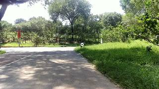
=== Step 0 Execution Feedback === [SUCCESS] Code executed in 67.18s. [Output] [VLM Q | thinking] I need to find the following objects in these frames: 'green grass', 'green park bench', 'white signboard', 'white pole', and 'wooden bench'. For each object, please tell me if it is visible, and in which frames it is most clearly seen. If an object is not visible, please state that. [VLM A | thinking] Based on the provided frames, here is the visibility of the requested objects: * **green grass**: Visible in all frames (0-8). * **green park bench**: Visible in the distance, most clearly seen in frames 2, 3, 4, 5, 6, 7, and 8. * **white signboard**: Visible as a small white marker in the grass, most clearly seen in frames 4, 5, 6, 7, and 8. * **white pole**: Visible on the far left edge of the image, most clearly seen in frames 1, 2, and 3. * **wooden bench**: Not visible. Based on the provided frames, here is the visibility of the requested objects: * **green grass**: Visible in all frames (0-8). * **green park bench**: Visible in the distance, most clearly seen in frames 2, 3, 4, 5, 6, 7, and 8. * **white signboard**: Visible as a small white marker in the grass, most clearly seen in frames 4, 5, 6, 7, and 8. * **white pole**: Visible on the far left edge of the image, most clearly seen in frames 1, 2, and 3. * **wooden bench**: Not visible. [Variables] New/changed: sample_frames: list, len=9 question: str answer: str [Inline Images] 5 image(s) attached below. Labels: [InputImages[0], InputImages[62], InputImages[124], InputImages[186], InputImages[242]] [Tool Calls] 1 tool/VLM call(s) this step. [show() budget] 245/250 images remaining.
# Select 32 evenly spaced frames for reconstruction indices = np.linspace(0, len(InputImages) - 1, 32, dtype=int) recon_frames = [InputImages[i] for i in indices] # Perform reconstruction recon = tools.Reconstruct.Reconstruct(recon_frames) print(f"Reconstruction complete. Number of frames: {recon.num_frames}") print(f"Metric scale: {recon.metric_scale}")
Reconstruction complete. Number of frames: 32 Metric scale: 11.904946327209473
=== Step 1 Execution Feedback === [SUCCESS] Code executed in 70.18s. [Output] Reconstruction complete. Number of frames: 32 Metric scale: 11.904946327209473 [Variables] New/changed: indices: ndarray, shape=(32,), dtype=int64 recon_frames: list, len=32 recon: Reconstruction, frames=[0..242] (32 frames) [Tool Calls] 1 tool/VLM call(s) this step.
# Define the prompts for the objects prompts = ["green grass", "green park bench", "white signboard", "white pole", "wooden bench"] labels = ["green grass", "green park bench", "white signboard", "white pole", "wooden bench"] # Segment the video # Using a window that covers the majority of the video for better tracking seg = tools.SAM3.segment_video_by_text(prompts, labels=labels, start_frame=0, end_frame=243) # Programmatic check for mask existence print("Mask existence check:") for i, label in enumerate(seg.labels): # Check a few frames to see if the mask is non-empty exists_in_any = False for fi in seg.frame_indices[::30]: # Check every 30th frame area = seg.get_mask(frame=fi, object=i).sum() if area > 0: exists_in_any = True break print(f" {label}: {'Found' if exists_in_any else 'NOT FOUND'}")
Mask existence check: green grass: NOT FOUND green park bench: NOT FOUND white signboard: NOT FOUND white pole: NOT FOUND wooden bench: NOT FOUND
=== Step 2 Execution Feedback === [SUCCESS] Code executed in 19.39s. [Output] Mask existence check: green grass: NOT FOUND green park bench: NOT FOUND white signboard: NOT FOUND white pole: NOT FOUND wooden bench: NOT FOUND [Variables] New/changed: prompts: list, len=5 labels: list, len=5 seg: PerFrameMask, frames=[0..242] (243 frames) i: int label: str exists_in_any: bool fi: int area: int64, shape=(), dtype=int64 [Tool Calls] 1 tool/VLM call(s) this step.
def get_box(image, prompt): res = vlm.locate(image, f"Give the bounding box (x1, y1, x2, y2) in 0-1000 normalized scale for {prompt}. Reply with ONLY the numbers.") if "Not visible" in res: return None try: # Remove any non-numeric characters except spaces and commas import re nums = re.findall(r"[-+]?\d*\.\d+|\d+", res) if len(nums) >= 4: return [float(x) for x in nums[:4]] except: pass return None # Grounding targets grounding_targets = [ ("green grass", InputImages[124]), ("green park bench", InputImages[31]), ("white signboard", InputImages[124]), ("white pole", InputImages[62]), ("wooden bench", InputImages[186]), ] boxes_normalized = {} for prompt, img in grounding_targets: box = get_box(img, prompt) boxes_normalized[prompt] = box print(f"{prompt}: {box}") # Convert normalized to pixel coordinates for SAM3 boxes_pixel = {} for prompt, box in boxes_normalized.items(): if box: # Find the image used for grounding to get W, H img = next(i for p, i in grounding_targets if p == prompt) W, H = img.width, img.height boxes_pixel[prompt] = tools.Geometry.normalized_to_pixel(box, W, H) print("\nPixel boxes:", boxes_pixel)
[VLM Q | locate] Before answering, first check whether what the question describes is clearly visible in the provided image(s). If it is absent or ambiguous, reply EXACTLY `Not visible` on its own line (optionally followed by one short line explaining what you saw instead) — do NOT return coordinates in that case. Only if the requested target is clearly and unambiguously present, answer the request below. Request: Give the bounding box (x1, y1, x2, y2) in 0-1000 normalized scale for green grass. Reply with ONLY the numbers. [VLM A | locate] 412 468 1000 1000 green grass: [412.0, 468.0, 1000.0, 1000.0] [VLM Q | locate] Before answering, first check whether what the question describes is clearly visible in the provided image(s). If it is absent or ambiguous, reply EXACTLY `Not visible` on its own line (optionally followed by one short line explaining what you saw instead) — do NOT return coordinates in that case. Only if the requested target is clearly and unambiguously present, answer the request below. Request: Give the bounding box (x1, y1, x2, y2) in 0-1000 normalized scale for green park bench. Reply with ONLY the numbers. [VLM A | locate] Not visible green park bench: None [VLM Q | locate] Before answering, first check whether what the question describes is clearly visible in the provided image(s). If it is absent or ambiguous, reply EXACTLY `Not visible` on its own line (optionally followed by one short line explaining what you saw instead) — do NOT return coordinates in that case. Only if the requested target is clearly and unambiguously present, answer the request below. Request: Give the bounding box (x1, y1, x2, y2) in 0-1000 normalized scale for white signboard. Reply with ONLY the numbers. [VLM A | locate] Not visible Two white signboards are present; selection is ambiguous. white signboard: None [VLM Q | locate] Before answering, first check whether what the question describes is clearly visible in the provided image(s). If it is absent or ambiguous,
=== Step 4 Execution Feedback === [SUCCESS] Code executed in 30.71s. [Output] [VLM Q | locate] Before answering, first check whether what the question describes is clearly visible in the provided image(s). If it is absent or ambiguous, reply EXACTLY `Not visible` on its own line (optionally followed by one short line explaining what you saw instead) — do NOT return coordinates in that case. Only if the requested target is clearly and unambiguously present, answer the request below. Request: Give the bounding box (x1, y1, x2, y2) in 0-1000 normalized scale for green grass. Reply with ONLY the numbers. [VLM A | locate] 412 468 1000 1000 green grass: [412.0, 468.0, 1000.0, 1000.0] [VLM Q | locate] Before answering, first check whether what the question describes is clearly visible in the provided image(s). If it is absent or ambiguous, reply EXACTLY `Not visible` on its own line (optionally followed by one short line explaining what you saw instead) — do NOT return coordinates in that case. Only if the requested target is clearly and unambiguously present, answer the request below. Request: Give the bounding box (x1, y1, x2, y2) in 0-1000 normalized scale for green park bench. Reply with ONLY the numbers. [VLM A | locate] Not visible green park bench: None [VLM Q | locate] Before answering, first check whether what the question describes is clearly visible in the provided image(s). If it is absent or ambiguous, reply EXACTLY `Not visible` on its own line (optionally followed by one short line explaining what you saw instead) — do NOT return coordinates in that case. Only if the requested target is clearly and unambiguously present, answer the request below. Request: Give the bounding box (x1, y1, x2, y2) in 0-1000 normalized scale for white signboard. Reply with ONLY the numbers. [VLM A | locate] Not visible Two white signboards are present; selection is ambiguous. white signboard: None [VLM Q | locate] Before answering, first check whether what the question describes is clearly visible in the provided image(s). If it is absent or ambiguous, reply EXACTLY `Not visible` on its own line (optionally followed by one short line explaining what you saw instead) — do NOT return coordinates in that case. Only if the requested target is clearly and unambiguously present, answer the request below. Request: Give the bounding box (x1, y1, x2, y2) in 0-1000 normalized scale for white pole. Reply with ONLY the numbers. [VLM A | locate] Not visible Multiple white poles are present; selection is ambiguous. white pole: None [VLM Q | locate] Before answering, first check whether what the question describes is clearly visible in the provided image(s). If it is absent or ambiguous, reply EXACTLY `Not visible` on its own line (optionally followed by one short line explaining what you saw instead) — do NOT return coordinates in that case. Only if the requested target is clearly and unambiguously present, answer the request below. Request: Give the bounding box (x1
def get_box_specific(image, prompt): res = vlm.locate(image, f"Give the bounding box (x1, y1, x2, y2) in 0-1000 normalized scale for {prompt}. Reply with ONLY the numbers.") if "Not visible" in res: return None try: import re nums = re.findall(r"[-+]?\d*\.\d+|\d+", res) if len(nums) >= 4: return [float(x) for x in nums[:4]] except: pass return None # More specific grounding targets grounding_targets = [ ("green grass", InputImages[124]), ("the green park bench in the distance", InputImages[31]), ("the small white signboard marker standing in the green grass", InputImages[124]), ("the white utility pole in the middle distance", InputImages[62]), ("the wooden bench", InputImages[186]), ] labels_map = { "green grass": "green grass", "the green park bench in the distance": "green park bench", "the small white signboard marker standing in the green grass": "white signboard", "the white utility pole in the middle distance": "white pole", "the wooden bench": "wooden bench" } boxes_pixel = {} for prompt, img in grounding_targets: box = get_box_specific(img, prompt) if box: W, H = img.width, img.height boxes_pixel[labels_map[prompt]] = tools.Geometry.normalized_to_pixel(box, W, H) print(f"{labels_map[prompt]}: {box}") else: print(f"{labels_map[prompt]}: Not found") print("\nFinal Pixel boxes:", boxes_pixel)
[VLM Q | locate] Before answering, first check whether what the question describes is clearly visible in the provided image(s). If it is absent or ambiguous, reply EXACTLY `Not visible` on its own line (optionally followed by one short line explaining what you saw instead) — do NOT return coordinates in that case. Only if the requested target is clearly and unambiguously present, answer the request below. Request: Give the bounding box (x1, y1, x2, y2) in 0-1000 normalized scale for green grass. Reply with ONLY the numbers. [VLM A | locate] 410 450 1000 1000 green grass: [410.0, 450.0, 1000.0, 1000.0] [VLM Q | locate] Before answering, first check whether what the question describes is clearly visible in the provided image(s). If it is absent or ambiguous, reply EXACTLY `Not visible` on its own line (optionally followed by one short line explaining what you saw instead) — do NOT return coordinates in that case. Only if the requested target is clearly and unambiguously present, answer the request below. Request: Give the bounding box (x1, y1, x2, y2) in 0-1000 normalized scale for the green park bench in the distance. Reply with ONLY the numbers. [VLM A | locate] Not visible green park bench: Not found [VLM Q | locate] Before answering, first check whether what the question describes is clearly visible in the provided image(s). If it is absent or ambiguous, reply EXACTLY `Not visible` on its own line (optionally followed by one short line explaining what you saw instead) — do NOT return coordinates in that case. Only if the requested target is clearly and unambiguously present, answer the request below. Request: Give the bounding box (x1, y1, x2, y2) in 0-1000 normalized scale for the small white signboard marker standing in the green grass. Reply with ONLY the numbers. [VLM A | locate] 538 442 556 484 white signboard: [538.0, 442.0, 556.0, 484.0] [VLM Q | locate] Before answering, first check whether what the question describes is clearly visible in the provided
=== Step 5 Execution Feedback === [SUCCESS] Code executed in 42.49s. [Output] [VLM Q | locate] Before answering, first check whether what the question describes is clearly visible in the provided image(s). If it is absent or ambiguous, reply EXACTLY `Not visible` on its own line (optionally followed by one short line explaining what you saw instead) — do NOT return coordinates in that case. Only if the requested target is clearly and unambiguously present, answer the request below. Request: Give the bounding box (x1, y1, x2, y2) in 0-1000 normalized scale for green grass. Reply with ONLY the numbers. [VLM A | locate] 410 450 1000 1000 green grass: [410.0, 450.0, 1000.0, 1000.0] [VLM Q | locate] Before answering, first check whether what the question describes is clearly visible in the provided image(s). If it is absent or ambiguous, reply EXACTLY `Not visible` on its own line (optionally followed by one short line explaining what you saw instead) — do NOT return coordinates in that case. Only if the requested target is clearly and unambiguously present, answer the request below. Request: Give the bounding box (x1, y1, x2, y2) in 0-1000 normalized scale for the green park bench in the distance. Reply with ONLY the numbers. [VLM A | locate] Not visible green park bench: Not found [VLM Q | locate] Before answering, first check whether what the question describes is clearly visible in the provided image(s). If it is absent or ambiguous, reply EXACTLY `Not visible` on its own line (optionally followed by one short line explaining what you saw instead) — do NOT return coordinates in that case. Only if the requested target is clearly and unambiguously present, answer the request below. Request: Give the bounding box (x1, y1, x2, y2) in 0-1000 normalized scale for the small white signboard marker standing in the green grass. Reply with ONLY the numbers. [VLM A | locate] 538 442 556 484 white signboard: [538.0, 442.0, 556.0, 484.0] [VLM Q | locate] Before answering, first check whether what the question describes is clearly visible in the provided image(s). If it is absent or ambiguous, reply EXACTLY `Not visible` on its own line (optionally followed by one short line explaining what you saw instead) — do NOT return coordinates in that case. Only if the requested target is clearly and unambiguously present, answer the request below. Request: Give the bounding box (x1, y1, x2, y2) in 0-1000 normalized scale for the white utility pole in the middle distance. Reply with ONLY the numbers. [VLM A | locate] Not visible Multiple white poles are present in the middle distance, making the target ambiguous. white pole: Not found [VLM Q | locate] Before answering, first check whether what the question describes is clearly visible in the provided image(s). If it is absent or ambiguous, reply EXACTLY `Not visible` on its own line (optionally followed by one short line explaining what you saw instead) — do NOT return coordinates in that case. Only if the requeste
# Targeted grounding for the remaining objects remaining_targets = [ ("the green park bench in the far distance", InputImages[31]), ("the grey metal pole on the right side of the road", InputImages[0]), ("the bench on the right side of the path", InputImages[186]), ] labels_map_remaining = { "the green park bench in the far distance": "green park bench", "the grey metal pole on the right side of the road": "white pole", "the bench on the right side of the path": "wooden bench" } for prompt, img in remaining_targets: box = get_box_specific(img, prompt) if box: W, H = img.width, img.height boxes_pixel[labels_map_remaining[prompt]] = tools.Geometry.normalized_to_pixel(box, W, H) print(f"{labels_map_remaining[prompt]}: {box}") else: print(f"{labels_map_remaining[prompt]}: Not found") print("\nUpdated Pixel boxes:", boxes_pixel)
[VLM Q | locate] Before answering, first check whether what the question describes is clearly visible in the provided image(s). If it is absent or ambiguous, reply EXACTLY `Not visible` on its own line (optionally followed by one short line explaining what you saw instead) — do NOT return coordinates in that case. Only if the requested target is clearly and unambiguously present, answer the request below.
Request: Give the bounding box (x1, y1, x2, y2) in 0-1000 normalized scale for the green park bench in the far distance. Reply with ONLY the numbers.
[VLM A | locate] Not visible
green park bench: Not found
[VLM Q | locate] Before answering, first check whether what the question describes is clearly visible in the provided image(s). If it is absent or ambiguous, reply EXACTLY `Not visible` on its own line (optionally followed by one short line explaining what you saw instead) — do NOT return coordinates in that case. Only if the requested target is clearly and unambiguously present, answer the request below.
Request: Give the bounding box (x1, y1, x2, y2) in 0-1000 normalized scale for the grey metal pole on the right side of the road. Reply with ONLY the numbers.
[VLM A | locate] 717 0 752 730
white pole: [717.0, 0.0, 752.0, 730.0]
[VLM Q | locate] Before answering, first check whether what the question describes is clearly visible in the provided image(s). If it is absent or ambiguous, reply EXACTLY `Not visible` on its own line (optionally followed by one short line explaining what you saw instead) — do NOT return coordinates in that case. Only if the requested target is clearly and unambiguously present, answer the request below.
Request: Give the bounding box (x1, y1, x2, y2) in 0-1000 normalized scale for the bench on the right side of the path. Reply with ONLY the numbers.
[VLM A | locate] 494 476 525 536
wooden bench: [494.0, 476.0, 525.0, 536.0]
Updated Pixel boxes: {'green grass': [314.88, 194.4, 768.0, 432.0], 'white signboard': [413.184, 190.944, 42=== Step 6 Execution Feedback ===
[SUCCESS] Code executed in 55.12s.
[Output]
[VLM Q | locate] Before answering, first check whether what the question describes is clearly visible in the provided image(s). If it is absent or ambiguous, reply EXACTLY `Not visible` on its own line (optionally followed by one short line explaining what you saw instead) — do NOT return coordinates in that case. Only if the requested target is clearly and unambiguously present, answer the request below.
Request: Give the bounding box (x1, y1, x2, y2) in 0-1000 normalized scale for the green park bench in the far distance. Reply with ONLY the numbers.
[VLM A | locate] Not visible
green park bench: Not found
[VLM Q | locate] Before answering, first check whether what the question describes is clearly visible in the provided image(s). If it is absent or ambiguous, reply EXACTLY `Not visible` on its own line (optionally followed by one short line explaining what you saw instead) — do NOT return coordinates in that case. Only if the requested target is clearly and unambiguously present, answer the request below.
Request: Give the bounding box (x1, y1, x2, y2) in 0-1000 normalized scale for the grey metal pole on the right side of the road. Reply with ONLY the numbers.
[VLM A | locate] 717 0 752 730
white pole: [717.0, 0.0, 752.0, 730.0]
[VLM Q | locate] Before answering, first check whether what the question describes is clearly visible in the provided image(s). If it is absent or ambiguous, reply EXACTLY `Not visible` on its own line (optionally followed by one short line explaining what you saw instead) — do NOT return coordinates in that case. Only if the requested target is clearly and unambiguously present, answer the request below.
Request: Give the bounding box (x1, y1, x2, y2) in 0-1000 normalized scale for the bench on the right side of the path. Reply with ONLY the numbers.
[VLM A | locate] 494 476 525 536
wooden bench: [494.0, 476.0, 525.0, 536.0]
Updated Pixel boxes: {'green grass': [314.88, 194.4, 768.0, 432.0], 'white signboard': [413.184, 190.944, 427.00800000000004, 209.088], 'white pole': [550.656, 0.0, 577.5360000000001, 315.36], 'wooden bench': [379.392, 205.632, 403.20000000000005, 231.55200000000002]}
[Variables] New/changed:
remaining_targets: list, len=3
labels_map_remaining: dict, len=3, keys=['the green park bench in the far distance', 'the grey metal pole on the right side of the road', 'the bench on the right side of the path']
box: list, len=4
boxes_pixel: dict, len=4, keys=['green grass', 'white signboard', 'white pole', 'wooden bench']
[Tool Calls] 1 tool/VLM call(s) this step.# Final attempt to ground the green park bench bench_prompt = "the small green bench in the distance, near the center of the image" bench_box = get_box_specific(InputImages[31], bench_prompt) if bench_box: W, H = InputImages[31].width, InputImages[31].height boxes_pixel["green park bench"] = tools.Geometry.normalized_to_pixel(bench_box, W, H) print(f"green park bench: {bench_box}") else: print("green park bench: Not found") # We will segment each object individually since they have different prompt frames all_segs = [] for label, box in boxes_pixel.items(): # Find the prompt frame for this label prompt_frame = None if label == "green grass": prompt_frame = 124 elif label == "white signboard": prompt_frame = 124 elif label == "white pole": prompt_frame = 0 elif label == "wooden bench": prompt_frame = 186 elif label == "green park bench": prompt_frame = 31 if prompt_frame is not None: # Segment and track the object # Note: prompt_frame_idx is relative to start_frame seg_obj = tools.SAM3.segment_video_by_box([box], [label], prompt_frame_idx=prompt_frame, start_frame=0, end_frame=243) all_segs.append(seg_obj) # To make it easier to handle, we can merge these into a single PerFrameMask-like structure # or just use the list. Since we need to extract points, we'll use the list. print(f"Segmented {len(all_segs)} objects.") # Verification: show one frame with all masks (if possible) or just a few individual ones if all_segs: # Use a frame where most objects are visible, e.g., 124 test_fi = 124 # We'll just visualize the first few to check quality for i, s in enumerate(all_segs): show([InputImages[124], s.visualize(test_fi)])
[VLM Q | locate] Before answering, first check whether what the question describes is clearly visible in the provided image(s). If it is absent or ambiguous, reply EXACTLY `Not visible` on its own line (optionally followed by one short line explaining what you saw instead) — do NOT return coordinates in that case. Only if the requested target is clearly and unambiguously present, answer the request below. Request: Give the bounding box (x1, y1, x2, y2) in 0-1000 normalized scale for the small green bench in the distance, near the center of the image. Reply with ONLY the numbers. [VLM A | locate] Not visible green park bench: Not found Segmented 4 objects. [image: show_0001] [image: show_0002] [image: show_0003] [image: show_0004]

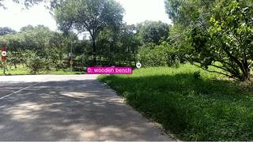
=== Step 7 Execution Feedback === [SUCCESS] Code executed in 207.08s. [Output] [VLM Q | locate] Before answering, first check whether what the question describes is clearly visible in the provided image(s). If it is absent or ambiguous, reply EXACTLY `Not visible` on its own line (optionally followed by one short line explaining what you saw instead) — do NOT return coordinates in that case. Only if the requested target is clearly and unambiguously present, answer the request below. Request: Give the bounding box (x1, y1, x2, y2) in 0-1000 normalized scale for the small green bench in the distance, near the center of the image. Reply with ONLY the numbers. [VLM A | locate] Not visible green park bench: Not found Segmented 4 objects. [Variables] New/changed: bench_prompt: str bench_box: NoneType all_segs: list, len=4 label: str prompt_frame: int seg_obj: PerFrameMask, frames=[0..242] (243 frames) test_fi: int i: int s: PerFrameMask, frames=[0..242] (243 frames) [Inline Images] 8 image(s) attached below. Labels: [InputImages[124], s.visualize(test_fi)] [Tool Calls] 2 tool/VLM call(s) this step. [show() budget] 237/250 images remaining.
import numpy as np from scipy.spatial.distance import cdist # 1. Re-run Reconstruction indices = np.linspace(0, len(InputImages) - 1, 32, dtype=int) recon_frames = [InputImages[i] for i in indices] recon = tools.Reconstruct.Reconstruct(recon_frames) # 2. Setup segmentation mapping labels_ordered = list(boxes_pixel.keys()) seg_map = {label: all_segs[i] for i, label in enumerate(labels_ordered)} def get_points(label, frame_idx): if label not in seg_map: return None seg = seg_map[label] # Find local index in recon try: local_idx = recon.frame_indices.index(frame_idx) except ValueError: local_idx = np.argmin(np.abs(np.array(recon.frame_indices) - frame_idx)) mask = seg.get_mask(frame=frame_idx, object=0) conf = recon.points.confidence[local_idx] # Use a slightly lower confidence threshold to ensure we get points for small objects valid_mask = mask & (conf > 0.3) points = recon.points.points[local_idx][valid_mask] return points # 3. Extract points # Target: Green Grass grass_pts = get_points("green grass", 124) # Candidates and their best frames candidates = { "white signboard": 124, "white pole": 0, "wooden bench": 186 } results = {} if grass_pts is not None and len(grass_pts) > 0: for label, frame in candidates.items(): obj_pts = get_points(label, frame) if obj_pts is not None and len(obj_pts) > 0: # Compute all-to-all distances and find the minimum # For large point clouds, we subsample to avoid memory issues if len(grass_pts) > 1000: grass_sub = grass_pts[np.random.choice(len(grass_pts), 1000, replace=False)] else: grass_sub = grass_pts if len(obj_pts) > 1000: obj_sub = obj_pts[np.random.choice(len(obj_pts), 1000, replace=False)] else: obj_sub = obj_pts dists = cdist(grass_sub, obj_sub) min_dist = np.min(dists) results[label] = min_dist print(f"Min distance to {label}: {min_dist:.4f}m") else: print(f"No points found for {label}") else: print("No points found for green grass") print("\nFinal distances:", results)
Min distance to white signboard: 5.6870m
Min distance to white pole: 5.5660m
Min distance to wooden bench: 0.4638m
Final distances: {'white signboard': 5.686998879151048, 'white pole': 5.566008653984862, 'wooden bench': 0.46377126804904867}
=== Step 11 Execution Feedback ===
[SUCCESS] Code executed in 8.51s.
[Output]
Min distance to white signboard: 5.6870m
Min distance to white pole: 5.5660m
Min distance to wooden bench: 0.4638m
Final distances: {'white signboard': 5.686998879151048, 'white pole': 5.566008653984862, 'wooden bench': 0.46377126804904867}
[Variables] New/changed:
indices: ndarray, shape=(32,), dtype=int64
recon_frames: list, len=32
recon: Reconstruction, frames=[0..242] (32 frames)
grass_pts: ndarray, shape=(73367, 3), dtype=float32
candidates: dict, len=3, keys=['white signboard', 'white pole', 'wooden bench']
results: dict, len=3, keys=['white signboard', 'white pole', 'wooden bench']
frame: int
obj_pts: ndarray, shape=(278, 3), dtype=float32
grass_sub: ndarray, shape=(1000, 3), dtype=float32
obj_sub: ndarray, shape=(278, 3), dtype=float32
dists: ndarray, shape=(1000, 278), dtype=float64, size=2.2MB
min_dist: float64, shape=(), dtype=float64
[Tool Calls] 1 tool/VLM call(s) this step.ReturnAnswer("D")
[ReturnAnswer] Answer submitted: D